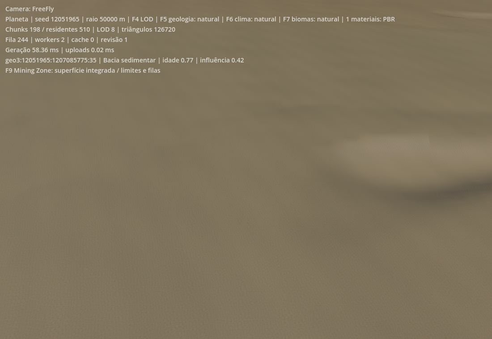
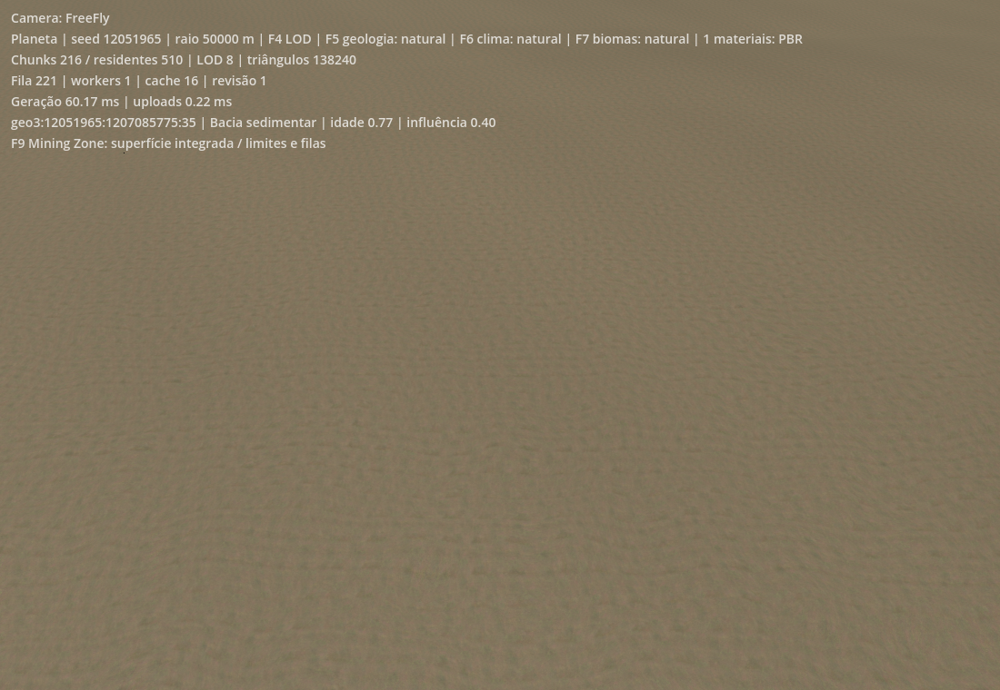
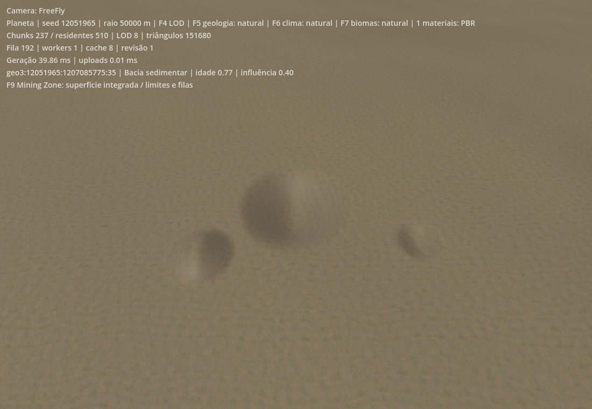
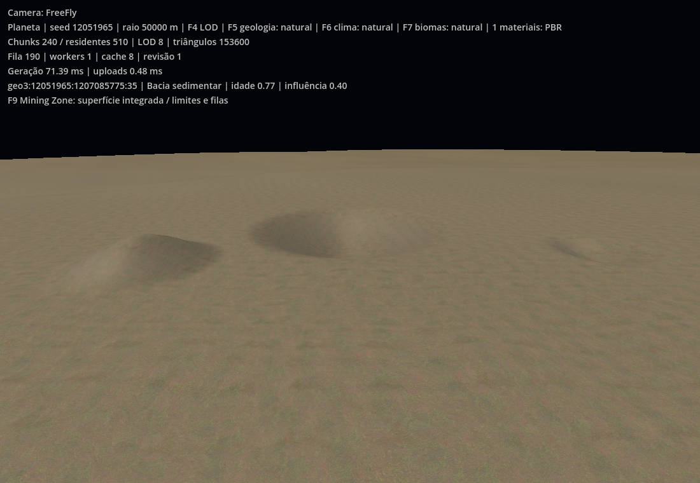
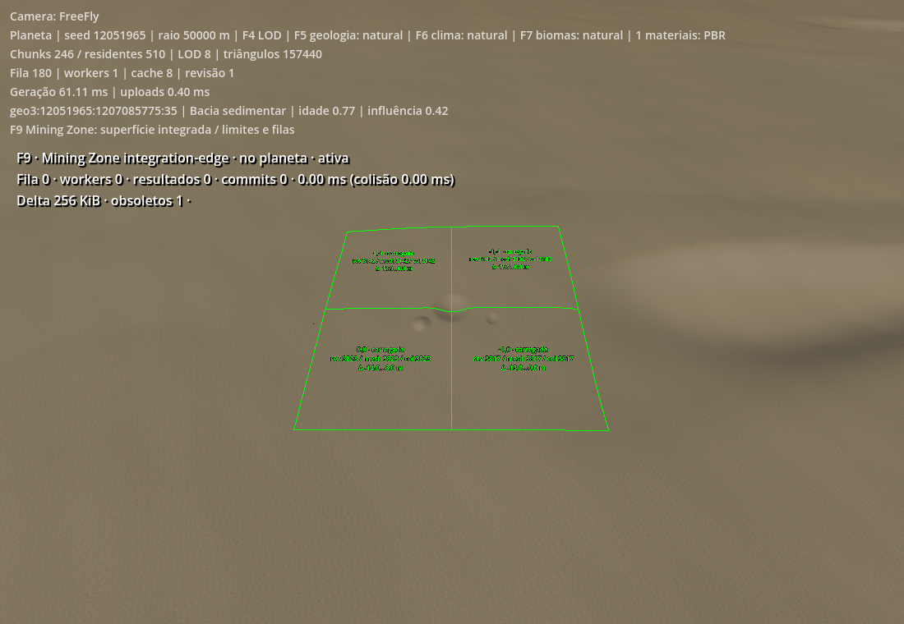
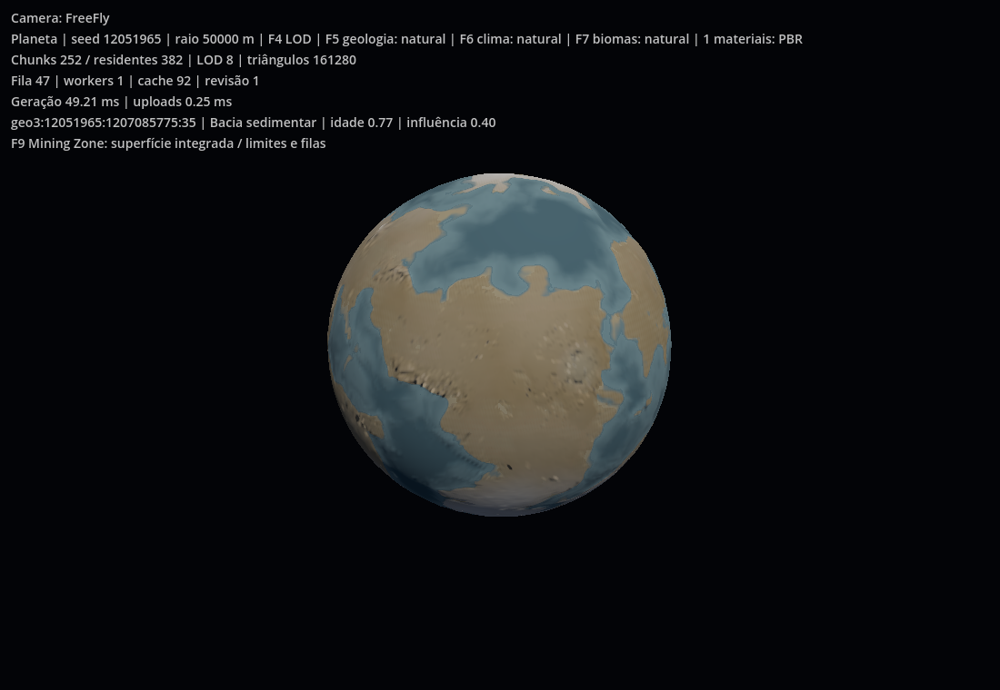

Capturas reais do Godot 4.6.1 / Vulkan / Vega 3. Depressão radial de 14 m cruzando quatro chunks, depressão menor e aterro de 8 m. Mesmo material PBR; nenhuma ferramenta jogável. Resultados e limites.





